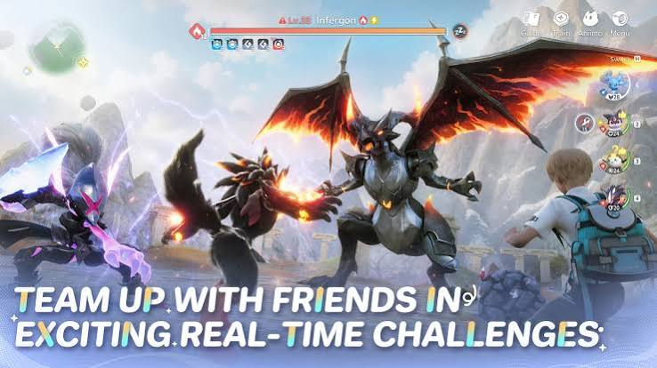

Aniimo is a free-to-play, open-world creature-collecting RPG developed by Pawprint Studio. Set on the continent of Idyll, players become "Pathfinders" who capture magical creatures called Aniimo. Its standout mechanic, Twining, lets you merge with your creatures and see the world through their abilities, using them for combat, exploration, and puzzles. With over 200 Aniimo to discover and cross-platform play, it launched on PC and consoles in September 2026, with mobile following shortly after
Part of the reason I play Aniimo is curiosity about a newly released game. After playing it, I feel it shares similarities with quite a few other titles like Genshin Impact and Pokémon, so adapting to it and playing it feel easy and give me a comfortable feeling.